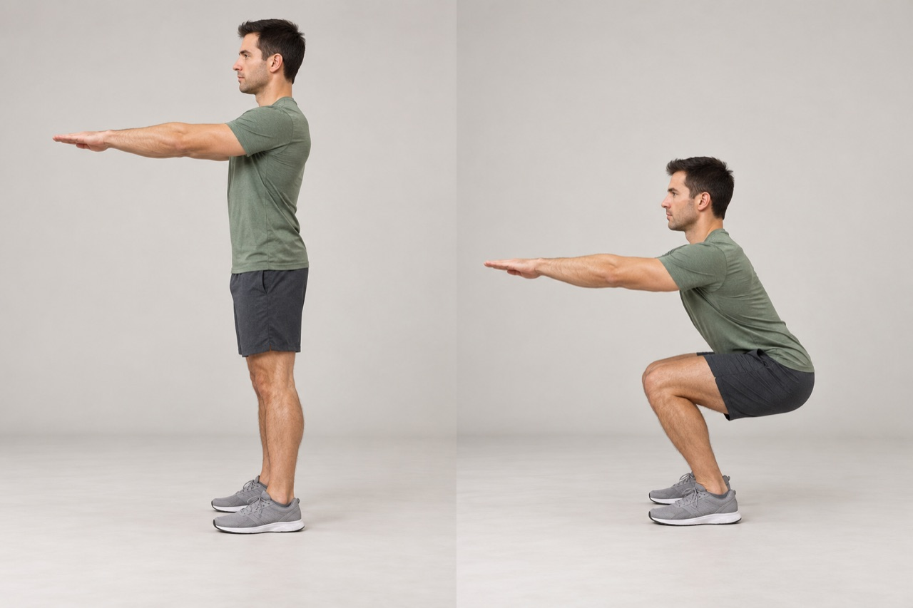
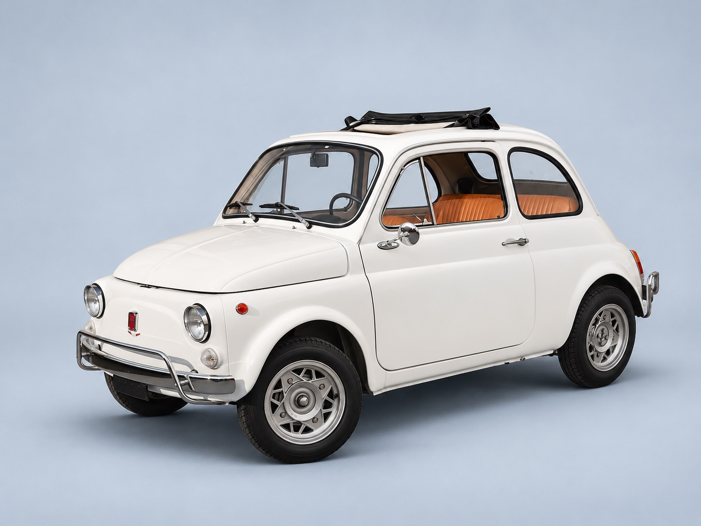

BUILT, COLLECTED, SHARED.
Useful things.
Curious ideas. Local stories.
Browser tools, playful projects, and a little Italian character.
Documents, media & development
02 / MOVEFitnessHome circuits, exercises & progress
03 / EXPERIENCELocal storiesA classic FIAT in Monferrato
04 / DISCOVERLearn & playWord games & creative challenges
05 / KEEPWiki & guidesNotes, references & owner resources
01 / EVERYDAY UTILITIES
Small tools. Everyday wins.
Nine tools for documents, media, QR codes, and development. File processing happens in your browser.
PDF & Image Merger
Combine PDFs and images into one document.
PDF Compressor
Reduce scanned and image-heavy PDFs locally.
Animated GIF Maker
Turn images or a video clip into a GIF.
Video Speed Controller
Preview slow-motion and fast-forward effects.
QR Code Generator & Scanner
Create Wi-Fi, URL, and contact codes. Scan with a camera or image.
Code Formatter
Beautify and highlight code in your browser.
Base64 Encoder/Decoder
Convert text to and from Base64.
CIDR Subnet Calculator
Calculate subnet masks, addresses, and IP ranges.
Website Scraper
Archive website resources as a ZIP. Network and proxy restrictions apply.
Free to use, with no account needed. Website Scraper is experimental and makes network requests, which may use third-party proxies.
02 / MAKE TIME TO MOVE
Your next workout.
Right here.
Choose a home circuit, learn each movement, and keep your training journal on this device. Rider Fit brings the workout, exercise library, and progress together.


03 / ALESSANDRIA & MONFERRATO, ITALY
Small car.
Quite a story.
A restored 1971 FIAT 500 L, a love of local places, and a different pace. Discover the project for weddings, photo shoots, and vintage experiences.
Explore the FIAT 500 Experience Already an owner? Open the guide →04 / FOLLOW YOUR CURIOSITY
Try it. See what happens.
Interactive projects that make room for learning and a little play.
05 / WORTH KEEPING CLOSE
A place for useful knowledge.
Practical references to come back to, from the workshop to your living room.